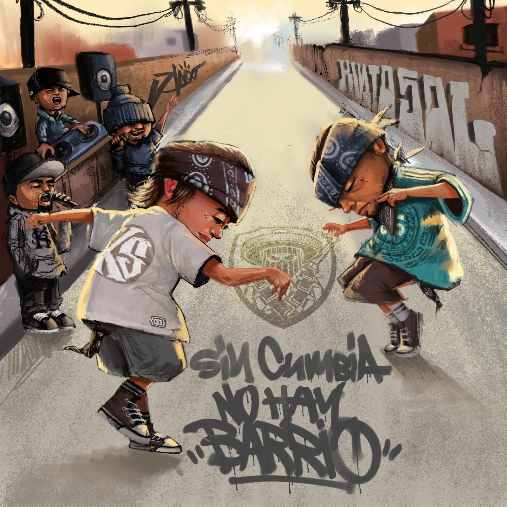

KINTO SOL
"SIN CUMBIA NO HAY BARRIO"

La agrupación mexicana de rap Kinto Sol presenta "Sin cumbia no hay barrio", su nuevo sencillo y tercer adelanto de "De arriba te caen las hojas", el vigésimo álbum de su carrera, cuyo lanzamiento está previsto para finales de septiembre. Con más de 20 años de trayectoria, la banda continúa construyendo un puente entre el hip hop y la identidad de los barrios mexicanos.
Aunque la cumbia ha estado presente en distintos momentos de la historia musical de Kinto Sol, en esta ocasión el grupo retoma el género para explorar una nueva faceta de su propuesta, fusionándose con el rap y con las historias que han caracterizado su trayectoria.
"Sin cumbia no hay barrio" es una celebración de la gente, del barrio, de la fiesta y de las raíces mexicanas. El tema reúne las voces de los hermanos García, Skribe y Chivo, junto con DJ Payback, para dar forma a una cumbia rap que conecta con el pueblo y con distintas generaciones.
La agrupación también prepara una miniserie de 10 episodios que será estrenada paulatinamente a través de su canal oficial de YouTube. El proyecto acompañará el lanzamiento del álbum y permitirá al público acercarse a diferentes historias y momentos relacionados a la agrupación.
A lo largo de más de dos décadas, Kinto Sol ha construido una identidad musical basada en la honestidad, las experiencias cotidianas y la realidad de las comunidades que forman parte de su historia. Sus canciones hablan de México, de sus barrios, de la familia, de las raíces y de las experiencias que han marcado a varias generaciones de seguidores.
Sobre la canción, Skribe explica que representa "un reencuentro con la cumbia como aquella canción de 'Vámonos', con uno de los pioneros del género, como lo es Chon Arauza, o el remix de 'México Rifa'".
💬 EL ÁLBUM 20
"Sin cumbia no hay barrio" llega después de Maldito Amor Vol. 2 (febrero) y de los sencillos dedicados a las madres de México (10 de mayo) y a Hugo Sánchez ("Hugo", antes del Mundial). "De arriba te caen las hojas" reafirma el orgullo por las raíces y la importancia de no olvidarlas.
El nuevo tema ya se encuentra disponible en plataformas digitales y funciona como antesala del lanzamiento de "De arriba te caen las hojas", programado para finales de septiembre. Con este álbum, Kinto Sol reafirma su lugar como una de las agrupaciones mexicanas fundamentales del rap en español, llevando su mensaje a nuevas generaciones sin dejar de mirar hacia sus orígenes.